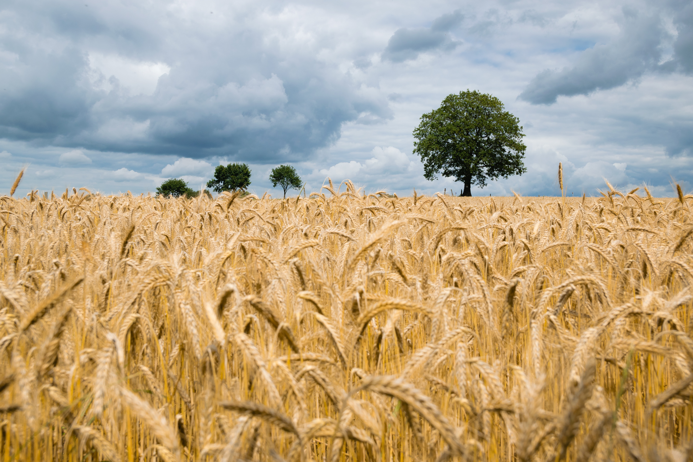

This project was proposed to our university from an Australia agricutural scientist. Before proposing this method,
the scientists had to walk through the fields to collect the samples by hand and as Australia's farms are very large, this took them a long time to collect
the samples.
I was the sole electronic engineer who knew coding and wiring. So all those tasks left given to me.
The pixhawk 4 was used as the autopilot of the drone to follow the predecided path given by the ardupilot ground control software.
When the drone was above the place where it was chosen to do a sample collection, the Raspberry Pi took control of the autopilot and used computer vision
algorithm I wrote that used video data from a pi camera to figure out where the wheat plants are.
Once the wheat plant was decided, the next algorithm started running which used a library called DroneKit which allowed me to send information to and from
the drone to the Raspberry Pi. This allowed me to position the drone directly above the plant with better accuracy than the autopilot on it's own.
All the code can be found here.
However, the drone could not be produced due to the pandemic causing the manufacturing facility at the univeristy to be closed. So the drone became theoretical
and the only thing that was not theoretical was the circuity I had produced on breadboards to show how the drone would have worked.

This was a group project in which we had to design, build and test can sized satellite that was launched 1000 feet into the air to perform an experiment.
Our CanSat's first experiment was testing a non-newtonian shear thickening fluid to absorb the impact and protect fragile cargo, which in this case was a small glass figurine.
The second experiment the Cansat was performing was controlling using a paraglider using two servos controlled from the ground to a pre decided landing position.
I was in charge of the electronics and coding for the satellite and ground control due to being the only one knowing how to do this within the group.
The Cansat was marked on the experiments it needs to perform their experiments, cost effectiveness, being on time with deadlines throughout the project.
In addition, the CanSat have limitations as size, weight, energy storage types. I knew I had to work within these parameters
furthermore, we were told the flight is around 45 minutes. So I made sure the batteries had enough energy to last the whole flight.
The final electronics of the satellite was comprised of a Raspberry Pi, 2 Pi cameras, 2 Servos, Radio breakout board, GPS breakout board,
Accelerometer and 2 9 volt batteries.
For the ground station it was a Raspberry Pi 4 connected to a computer to see what is running and a radio breakout board to connect to the CanSat.
All the code can be found here.
We could not use my ground control software due to the team leader told me on the launch day,
that legally he cannot use it and has to look at the CanSat in the air directly as well as he can only control it when it is only 400 feet above ground.
The non-newtonian fluid performed well and protected the glass figurine. in additiion, the paraglider opened and performed well however,
it could not be controlled due to human error resulting in both servos being short circuited.
In the end we did not win however, I know where exactly we went wrong and now know for future projects to never fall into these traps again.
During my Bachelour year of univeristy, I had to do a individual project
i = 0;
while (!deck.isInOrder()) {
print 'Iteration ' + i;
deck.shuffle();
i++;
}
print 'It took ' + i + ' iterations to sort the deck.';